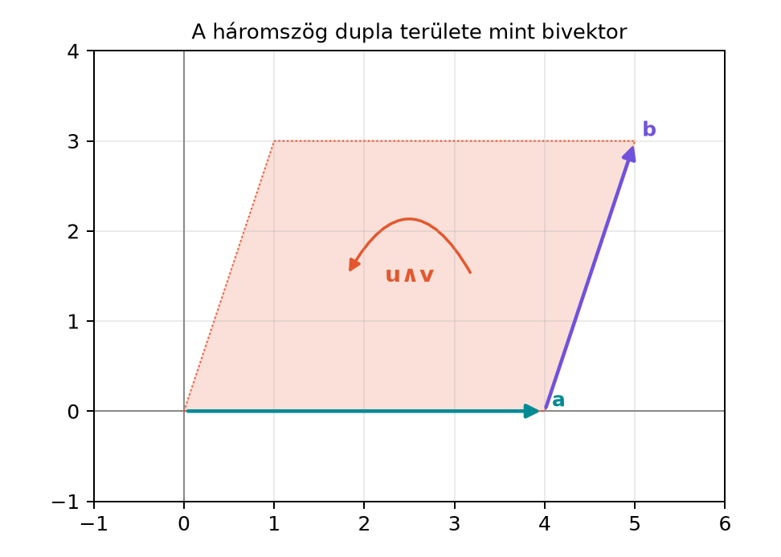

6.4 Síkgeometria geometriai
algebrával: tételek és feladatok
6.4.1 Motiváció: a síkgeometria
tételei egyetlen algebrai keretben
A középiskolai síkgeometriában a koszinusz- és a szinusztételt
gyakran külön-külön, hasonlósági vagy koordinátageometriai eszközökkel
bizonyítjuk. A geometriai algebra azért hatékony itt, mert a geometriai
szorzat egyszerre tartalmazza a hosszra vonatkozó információt a
skalárszorzaton, a területre vonatkozó információt pedig a külső
szorzaton keresztül. Ha egyszer megtanultuk a G(2) alapszabályait, a
klasszikus tételek rövid, algebrailag ellenőrizhető azonosságokká
válnak.
Ebben az alfejezetben a G(2) eddigi eszközeit gyakoroljuk:
skalárszorzat, külső szorzat, geometriai szorzat, vektor hossza és
irányított terület. Célunk, hogy a háromszögekkel kapcsolatos
összefüggéseket, valamint két egyenes metszéspontjának kiszámítását
ugyanabban a nyelvben fogalmazzuk meg.
6.4.2 Szemléletes kép: a háromszög
területe mint bivektor
Adott az
,
,
háromszög. Az
csúcsból a
,
illetve
csúcsba mutató vektorok
Az
bivektor nagysága az
és
által kifeszített paralelogramma területét adja, a háromszög területe
ennek éppen a fele.

A háromszög dupla területe mint bivektor
- Az A = (0,0) közös csúcsból induló u = (4,0) és v = (1,3)
oldalvektorok által kifeszített u∧v bivektor. A paralelogramma területe
12, a háromszögé 6.
A bivektor irányítása a nyíllal jelzett körüljárást követi:
-ból
-be
haladunk. Ha a sorrendet felcserélnénk, az
bivektor ugyanakkora területű, de ellentétes irányítású lenne.
6.4.3 Koszinusztétel a geometriai
szorzatból
Tétel (koszinusztétel). Legyen
és
két, közös kezdőpontból induló vektor, a közrezárt szögük
.
Ekkor a különbségvektoruk hosszának négyzete
Bizonyítás. A vektor hossznégyzete megegyezik a
vektor önmagával vett geometriai szorzatával, mert
,
és
.
Ezért
A geometriai szorzat vektorokra nem kommutatív,
ezért a két vegyes tagot nem szabad
-ként
összevonni. A A geometriai szorzat axiómái
alfejezetben láttuk, hogy
Így
Végül a skalárszorzat geometriai jelentése szerint
ami éppen a tétel állítását adja. ∎
A levezetés jól mutatja, hogy a koszinusztétel valójában a geometriai
szorzat nemkommutatív részéből, a skalárszorzatból következik. A külső
szorzat nem tűnik el feleslegesen: a különbségképzés miatt a bivektoros
rész kiejti önmagát.
6.4.4 Szinusztétel a külső
szorzatból
Tétel (szinusztétel). Legyenek egy háromszög
oldalvektorai
úgy, hogy
Jelölje az oldalak hosszát
,
,
,
a velük szemközti szögeket pedig rendre
.
Ekkor
Bizonyítás. Először megmutatjuk, hogy a három
oldalvektor páronkénti külső szorzatai megegyeznek. Mivel
,
így
.
Ezért
A három bivektor nem csupán azonos nagyságú, hanem ugyanaz a
bivektor; mindegyik a háromszög dupla területét reprezentálja.
Másrészt a külső szorzat nagyságára a Külső
szorzat koordinátákkal és a 2×2 determináns alfejezet eredménye
alapján fennáll, hogy két vektor külső szorzatának abszolút értéke a két
vektor hosszának és a közrezárt szög szinuszának a szorzata. A háromszög
belső szögeivel:
A bivektorok egyenlősége miatt a három kifejezés is egyenlő:
Mindhárom oldalt elosztva az
szorzattal:
∎
Ebben a bizonyításban a szinusztétel nem a szögfüggvények
azonosságából, hanem abból a geometriai tényből következik, hogy a
háromszög körüljárása során mindhárom oldalpár ugyanazt az irányított
területet feszíti ki.
6.4.5 Kidolgozott példa: konkrét
háromszög
Tekintsük újra az
,
,
háromszöget. Az
csúcsból induló két oldalvektor
A hossznégyzetek:
A skalárszorzat:
A koszinusztételből a harmadik oldal hossznégyzete:
tehát a harmadik oldal hossza
Ez összhangban van a koordinátás számolással, hiszen a
-ből
-be
mutató vektor
,
és a hossza
.
Most a terület. A külső szorzat:
A
tag kiesik. A háromszög területe tehát
A szinusztétel ellenőrzéséhez az
csúcsnál lévő
szögre:
A
szöggel szemközti oldal hossza
,
így
Ugyanezt az értéket kapnánk a másik két oldalpárból is, ahogyan azt a
tétel állítja.
6.4.6 Két egyenes metszéspontja
külső szorzattal
A külső szorzat nemcsak területek, hanem
metszéspontok kiszámítására is alkalmas. Legyen az első
egyenes egyenlete
a második egyenesé pedig
Itt
és
az egyenesek irányvektorai. Feltesszük, hogy a két egyenes nem
párhuzamos, azaz
.
Tétel (két egyenes metszéspontja). Ha
,
akkor a két egyenes metszéspontja
Bizonyítás. A metszéspont rajta van az első
egyenesen, ezért
valamilyen
valós számmal. Mivel
rajta van a második egyenesen is, a
vektor párhuzamos
-vel.
Ez pontosan akkor teljesül, ha a két vektor külső szorzata nulla:
Helyettesítsük be az
alakot:
A külső szorzat disztributivitása miatt
Innen
Mivel
,
oszthatunk vele:
A G(2)-ben minden bivektor ugyanannak az
pszeudoskalárnak a skalárszorosa, ezért ez a hányados valós szám.
Visszahelyettesítve az első egyenes egyenletébe éppen a tétel képletét
kapjuk. ∎
Számoljuk ki a tételben szereplő két bivektort. Először
A számláló:
A
és
tagok nullák, ezért
A nevező:
A második tag
,
tehát
Így a
paraméter:
A metszéspont:
Ellenőrzésképpen a második egyenesen is rajta kell lennie: ha
,
akkor
Ez nem egyezik! Valami elszámolás történt. Nézzük újra a második
egyenes ellenőrzését.
A metszéspont
-koordinátája
,
-koordinátája
.
A második egyenes paraméteres alakja:
,
.
Az
-ből
.
Ekkor
.
Tehát az ellenőrzésem az előbb rossz volt:
,
nem
.
A második egyenesen tehát
,
és az
valóban
.
Javítsuk: a fenti ellenőrzést ne írjuk rosszul. A kidolgozott példában
elegendő az első egyenest mutatni, és az ellenőrzést a másodikon
helyesen:
Tehát rendben.
6.4.8 Háromszög területe és
súlypontja
Definíció (háromszög területe). Ha egy háromszög
egyik csúcsából a másik két csúcsba mutató vektorok
és
,
akkor a háromszög területe
Definíció (súlypont). Az
csúcsvektorú háromszög súlypontja
A súlypont jól ismert tulajdonsága, hogy a súlyvonalon a csúcstól
számítva
arányban oszt. Ezt a vektoros alak azonnal mutatja. Legyen a
oldal felezőpontja
Ekkor
Átrendezve:
Ez azt jelenti, hogy az
-ból
a
felezőpontjába húzott súlyvonalon haladunk, és az
-tól
mért távolság a teljes súlyvonal kétharmada. Ugyanez természetesen
mindhárom csúcsra elmondható.
A fenti példában az
,
,
háromszög súlypontja:
6.4.9 Tipikus hibák és
félreértések
A geometriai szorzat vegyes tagjainak
összevonása. A koszinusztétel levezetésében a
kifejtésekor a vegyes tagok
és
,
nem pedig
.
A geometriai szorzat nem kommutatív, ezért csak az
összefüggést használhatjuk.
A metszéspont képletében az előjel. A számláló
.
Ha valaki
-t
ír, a
paraméter előjelet vált, és így a metszéspont az első egyenesen rossz
irányba tolódik el.
Bivektoros hányados értelmezése. A
képletben az osztás csak azért ad valós számot, mert a G(2)-ben minden
bivektor az
elem skalárszorosa. Magasabb dimenzióban, például a G(3)-ban ez már nem
ilyen egyszerű, ezért ott a hányadost nem használhatjuk
automatikusan.
A szinusztétel külső szorzatainak előjele. A
képletben a bal oldalon abszolút érték áll. Az irányítás miatt maga a
bivektor lehet negatív együtthatójú is, például ha a vektorok sorrendje
az óramutató járásával megegyező.
6.4.10 Feladatok
6.4.10.1 (a) Fogalmi kérdés
Ha
,
miért áll fenn, hogy
?
Fogalmazd meg geometriailag is, mit jelent ez a három bivektor közös
volta a háromszögre nézve.
6.4.10.2 (b) Kézi számolás
Adott
és
.
Számítsd ki:
a két vektor hosszát,
a skalárszorzatot és a külső szorzatot,
a két vektor által bezárt szög koszinuszát és szinuszát,
a közös kezdőpontból induló vektorokkal kifeszített háromszög
harmadik oldalának hosszát.
6.4.10.3 (c) Bizonyítási
feladat
Igazold, hogy az
pont mindhárom súlyvonalon rajta van, és mindegyik súlyvonalat a
csúcstól számítva
arányban osztja.
6.4.10.4 (d) Alkalmazási feladat
Pythonnal
Írj a ga2.py könyvtárra épülő rövid kódot, amely
kiszámítja a fenti,
,
,
,
adatokkal megadott két egyenes metszéspontját. A bivektor-hányadoshoz
használd a bivektorok .e12 együtthatóját.
6.4.11 Megoldások
6.4.11.1 (a)
Mivel
,
a
helyettesítéssel:
mert
és
.
Hasonlóan kapjuk, hogy
.
Geometriailag mindhárom bivektor a háromszög dupla területét
reprezentálja, és a körüljárásuk is azonos, tehát nem csupán a
nagyságuk, hanem az irányításuk is megegyezik.
6.4.11.2 (b)
A hosszak:
A skalárszorzat:
A külső szorzat:
A szög koszinusza és szinusza:
A harmadik oldal vektora
,
hossza
Ellenőrzés a koszinusztétellel:
6.4.11.3 (c)
Jelölje
a
oldal felezőpontját. Ekkor
Kivonva mindkét oldalból
-t:
Ez azt jelenti, hogy az
-ból
a
felezőpontjába mutató vektor
-szorosát
kell vennünk, így
a súlyvonalon van, és a csúcstól a felezőpontig terjedő szakaszt
arányban osztja. A számolás mindhárom csúcsra megismételhető.
Ebben az alfejezetben a G(2) eddigi műveleteivel bizonyítottuk a
klasszikus síkgeometria két alaptételét. A koszinusztétel a geometriai
szorzat
kifejtéséből adódik; a vegyes tagok nem kommutatív összege éppen a
skalárszorzatot adja. A szinusztétel abból következik, hogy a háromszög
oldalvektoraira
,
ezért
,
és a közös bivektor abszolút értéke
.
Ebből
.
Két egyenes metszéspontjára levezettük a
képletet. Ez utóbbi továbbvitt eredmény: a Metszés
és egyesítés (meet, join) bevezető szinten és a Lineáris egyenletrendszerek megoldása külső
szorzattal alfejezetben ezt a bivektor-hányadosos gondolatot
általánosítjuk. A háromszög területe
,
súlypontja
.